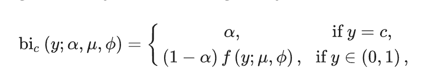
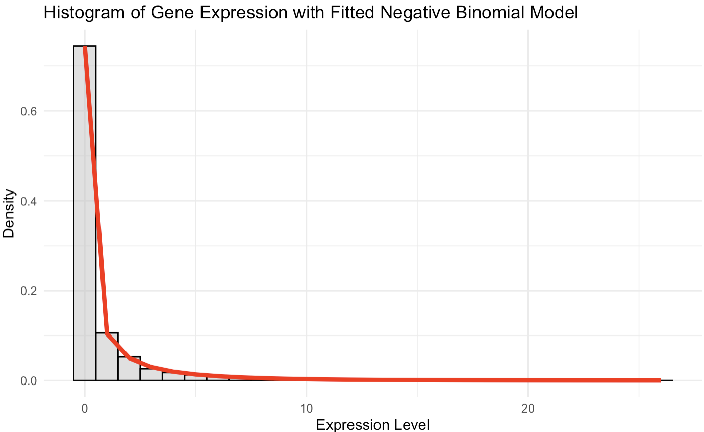
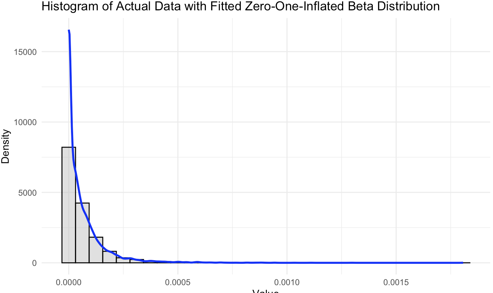

Research Diary
Week 4 (Feb 1):
Questions:
what are those different ATAC seq data
- ATAC gene activity (zero inflated beta)
zero inflated beta
Mon Feb 5
formulate new model with negative binomial and zi beta
- normalizing data?
zero inflated beta (https://www.sciencedirect.com/science/article/pii/S0167947311003628?via=ihub#s000010)

\(\alpha\) is the probability of observiing zero
fit using r and rstan
Sun Feb 4
get visualization/summary of SOX2 and HES1
- SOX2 (count): Negative binomial
- 
- HES1(probability of gene activity): zero-inflated beta
- 
fit model, get parameter from bayesian hierarchical model
Thurs Feb1
deliverables:
plots/summary stats on 1 gene/region (BPCells, choose gene/region from paper)
try rstan
mixture of models
simulation
in the mean time, check out other paper on epigenomic & transcriptomic integration and imputation
Papers:
review: A Review of Integrative Imputation for Multi-Omics Datasets (https://www.frontiersin.org/articles/10.3389/fgene.2020.570255/full): for epigenomic & transcriptomic integration:
ML based regression models:
ensemble learning method (Lin et al., 2016): uses correlations between various types of multi-omics datasets; least square regression model to integrate the multiple results from both self- and cross-imputation strategies into a single prediction model
EpiXcan (Zhang et al., 2019): transcriptomic imputation; (1) calculate SNP priors by using a hierarchical Bayesian model (qtlBHM) (Li et al., 2016); (2) transform SNP priors to penalty factors with a mapping function; and (3) predict gene expression by using penalty factors and genotype data in the following weighted elastic net (WENet) equation (Zhang et al., 2019)
TOBMI (Trans-Omics Block Missing data Imputation) (Dong et al., 2019): KNN-weighted approach; imputes RNA-seq from DNA methylation probe datasets
DNN-based transfer learning:
- TDimpute (Zhou X. et al., 2019): is a deep neural network (DNN)-based transfer learning approach; imputes gene expression data using DNA methylation; can be improved by integrating prior biological knowledge regarding the gene-gene interaction factors to reduce parameters of the DNN model
fread to get columns based on col name
gene of interest: SOX2 (ENSG00000181449)
area of interest: HES1
Week 3:
try stan (probabilistic programming tool, prototyping)
libraries,
work on low dimension
by gene/extend to multiple genes/extend to multiple regions
mixture of models
simulation
start with one gene (mentioned in paper and nearby region) and see if poisson make sense
scatterplots to see any correlations
cross validation (generalize to other unseen data)
likelihood ratio,
GLM:
Let \(Y_{ij}\) represent the count of (spliced or unspliced) RNA for gene \(i\) in cell \(j\).
\(Y_{ij} \sim \text{Poisson}(\lambda_{ij})\) with rate \(\lambda{ij}\), where\(\lambda{ij}\) is the expression level of gene \(i\) in cell \(j\). The PMF of the Poisson distribution is \(P(Y_{ij} = k) = \frac{\lambda_{ij}^k e^{-\lambda_{ij}}}{k!}\), for \(y = 0, 1, 2, ...\)
Let \(X_{kj}\) denote the accessibility (0 for closed, 1 for open) of region \(k\) in cell \(j\). \(X_{kj} \sim \text{Bernoulli}(p_{kj})\) with probability \(p_{kj}\), where \(p_{kj}\) is the probability of region \(k\) being accessible in cell \(j\). The PMF of the Bernoulli distribution is: \(P(X_{kj} = x) = p_{kj}^x (1 - p_{kj})^{1-x}\) for \(x \in {0, 1}\).
Linking Function: log link model: \(\log(\lambda_{ij}) = \beta_0 + \sum_{k=1}^n \beta_k X_{kj}\), where \(\beta_0\) is the intercept and \(\beta_k\) are coefficients.
LMM:
Bayesian:
Thur Feb 1
modeling chromatin accessibility –> gene expression:
- established causal relationship
bayesian:
workflow
Tue Jan 30
variable selection? dimension reduction?
test distribution before dimension reduction
filter out low and high expressed genes
downstream analysis? what is the end goal for this integration?
- clustering
meeting:
simple poisson on the data
explicit document
define model
stan, but other models rstan/pystan
simulate data and if can recover it
look at data, distribution, chop off chunks (take some genes)
mixture of generalized linear models
is gene affected by epigenetics or is affecting epigenetics (how can we identify)
Week 2:
Thur Jan 25
sparsity & high dimensionality?
sparse priors
zero-inflated models
Reversing the direction of the relationship in a hierarchical Bayesian model to predict ATAC-seq data (chromatin accessibility) from RNA-seq data (gene expression) is an intriguing approach, particularly given the interplay between gene expression and chromatin state. Here’s how you could structure such a model:
### Conceptual Framework for RNA-seq to ATAC-seq Prediction
1. **Model Objective**: Predict binary chromatin accessibility states (ATAC-seq data) from gene expression levels (RNA-seq data).
2. **Latent Variable**: Introduce a latent variable representing an underlying biological process that influences both gene expression and chromatin accessibility.
3. **Hierarchical Structure**:
**Layer 1 (Data Level)**: RNA-seq data (gene expression counts) and ATAC-seq data (binary chromatin accessibility states).
**Layer 2 (Latent Variable)**: The latent variable captures the transcriptional regulatory state, influenced by gene expression and affecting chromatin accessibility.
**Layer 3 (Parameters)**: Parameters define the relationship between gene expression and the latent variable, and between the latent variable and chromatin accessibility.
### Formulating the Hierarchical Model
1. **Defining the Latent Variable (Z)**:
- \(Z_i\) represents the latent transcriptional regulatory state for gene \(i\).
2. Modeling the First Relationship (Gene Expression to Z):
- If \( Y_i \) is the count of gene expression for gene \(i\), model the relationship to \(Z_i\) (e.g., using a log link function in a Poisson regression):
\(Z_i = f(\alpha_0 + \alpha_1 \log(Y_i + 1))\)
- \(f\) might be a function ensuring the latent variable’s appropriate range, with \(\alpha_0, \alpha_1\) as parameters.
3. Modeling the Second Relationship (Z to Chromatin Accessibility):
- Let \(X_i\) be the binary chromatin accessibility state for gene \(i\). Model this with a Bernoulli process, where the probability \(p_i\) is a function of \(Z_i\):
\(X_i \sim \text{Bernoulli}(p_i)\)
\(p_i = g(\beta_0 + \beta_1 Z_i)\)
- \(g\) could be a logistic function, ensuring \(p_i\) lies between 0 and 1.
Wed Jan 24
match unmatched scRNA and scATACseq
Seurat 3.0: CCA + MNN
Proposed Parametric Model
1. Model Objective: The goal is to develop a model that uses gene expression profiles (RNA-seq) to predict chromatin accessibility states (ATAC-seq) for corresponding genomic regions. This implies a relationship where gene expression influences or is indicative of chromatin accessibility.
2. Formulating the Model:
Let \(Y_i\) represent the RNA expression level for gene \(i\), modeled by a Poisson (or negative binomial) distribution.
Let \(X_i\) represent the chromatin accessibility (binary) at a region associated with gene \(i\), modeled by a Bernoulli distribution.
3. Linking RNA-seq to ATAC-seq: a link function that connects the Poisson-distributed RNA-seq data to the Bernoulli-distributed ATAC-seq data. A potential approach could be a logistic regression model where the log-odds of chromatin accessibility are modeled as a function of gene expression levels:
\(\log\left(\frac{P(X_i = 1)}{1 - P(X_i = 1)}\right) = \beta_0 + \beta_1 Y_i\)
Here, \(\beta_0\) and \(\beta_1\) are parameters to be estimated, linking gene expression to chromatin accessibility.
4. Parameter Estimation: The parameters \(\beta_0\) and \(\beta_1\) can be estimated using maximum likelihood estimation or Bayesian methods, depending on the approach and the inclusion of prior knowledge.
Tue Jan 23
Tomorrow to-dos:
- Finish going over citations page 10-end
- understand data input and output
- check if joint modeling work and has been done by other groups
- research bayesian joint modeling
Mon Jan 22
Tomorrow to-dos:
- examine data and methods used (CCA?) by data paper
- check the corresponding section in review papers
- organize in tables
to address the following next steps:
developing parametric model to integrate multiple data modalities (ATAC, unspliced RNA, spliced RNA)
search for (method) papers
organize based on statistical frameworks
also look into the citations of the data paper (to rule out methods used)
formulate latent generative model (latent –> ATAC/unspliced/spliced)
Joint Meeting:
Haley’s research
cell cycle phase
- quiescence cells
print cells on chips
(iso5, iso10, cellenONE) they are different printing methods (iso5: stop after 5 drops of no cell; iso10: stop after 10 drops of no cell; cellenONE: one cell per well, dispose no cell droplets based on prediction)
neuronetwork decide whether cell present in well (after examining the picture after printing)
compare quality of those three printing methods
benchmarking cell cycle calling classification algorithms (on Buettner, Hayashi, and VASAseq(next step) datasets)
Seurat/Scanpy (not functioning very well)
assign cell scores
using cell scores to predict cell cycle phase
tested
Deepcycle: circular RNA velocity
autoencoder
spliced and unspliced
cell assignment
correct separation, but incorrect labeling
non-coding markers, alternative splicing
phase misassignment, direction flipping (based on the training gene pattern)
Revelio
Meeting:
epigenomic and transcriptomic integration
RNAseq: unspliced and spliced (measures velocity)
ATACseq: upstream
match these 3, downside is multiome is not particularly scalable, some cells are matching and some are not matched, independent experiment with ATAC and RNA
parametric model to integrate independent data
joint parametric model to match
CCA –> weighted nearest neighbour (non essensial)
data: only a small chunck has all three, other cells has one modality
bayesian: on one side, we can do some inference on the unmeasured part
NCVIG, predictive model to predict RNA based on ATAC or vice versa
cis (on the same DNA) and trans (upstream, not on same DNA) factorsin genetics
ATAC mostly on cis factors,
gene activity matrix, ATAC (limitations)
Week 1:
Next Steps:
Effort:
tony’s benchmarking work?
papers
signac: integration of our ATAC/CUT&Tag and scATAC-seq/scCUT&Tag data
sc chromatin data (scATACseq)
integrate seamlessly with Seurat
integrate scATACseq with scRNAseq
anchors
seurat: RNA data integration and cell type identification
R package
single cell data, can integrate CITEseq, scATACseq, etc.
indentify anchors (pairs or groups of cells from different datasets that are predicted to be similar) between datasets
supports dimensionality reduction like pca, tsne, umap, and clustering
accuracy of integration heavily relies on the quality and comparability of the datasets
challenging interpretation
CCA
- Sparse CCA: find linear combinations of variables in two datasets that are maximally correlated, reduce dimension, feature selection (assumes linear relationships between variables, choice of sparsity parameters (needs tuning), hard to interpret)
non-negative matrix factorization
multiomics data structure: multiple layers of omic data. Each layer (like transcriptomic, proteomic data) can be represented as a matrix where columns represent samples, and rows represent molecular features.
NMF reduces the dimensionality of each omic layer by extracting latent features that capture the most relevant patterns in the data.
integration: concatenate then NMF or NMF separately to each dataset then compare results
good interpretability: due to non-negativity, leading to additive, parts-based representations
handles heterogeneous data
assumes linear additive interactions
can be sensitive to initialization
MOFA
unsupervised, uncovers latent factors
handle heterogeneity; It can integrate different types of omics data, even if they have different scales, distributions, or levels of noise.
allows missing values
input: multiple matrices
bayesian factor analysis model, It identifies latent factors and learns the weights (loadings) for each feature in each dataset, explaining how much each feature contributes to each factor.
output: latent factors, and how each feature contributes to the latent factors.
assumes linear relationships
challenging to interpret
Kernel NMF maps the data to a higher-dimensional space where linear combinations can approximate non-linear relationships in the original space.
deep learning architectures
Bayesian NMF:
Graph Regularized NMF: This method incorporates graph-based regularization terms into the NMF framework
Epigenomic vs transcriptomics data:
- Epigenomic: DNA, histone, etc. ; data structure: genomic coordinates (start and end position) with corresponding modification levels or accessibility scores
- Transcriptome: RNA stuff; data structure: counts or expression levels for each gene or transcript
Meeting:
Goal:
Create a table containing methods to jointly analyze multi-omics data, focus on input, output, what aspects did they miss in their analysis/models, and what are the statistical assumptions that we may be able to relax. (will become the intro to paper)
Rough timeline:
Jan 18-25: Finish problem definitions
Single cell multiomics: single cell RNA-seq + single cell ATAC-seq
Spatial multiomics: image data + RNA-seq + histone etc.
Q. What are existing methods to jointly analyze multiomics data? What aspects did they miss in their analysis/models? What are the statistical assumptions that we may be able to relax?
https://www.10xgenomics.com/datasets
Ultimate goal: Find a statistics problem that is (a) interesting to you and (b) feasible (data availability and time constraints).
Some in-house tool: https://github.com/causalpathlab/asapR
Embedding/matrix factorization with variable selection
Graph-constrained of network-guided embedding without PyTorch/Tensorflow/etc
Feb/Mar: Exploratory data analysis
Mar/Apr: New methods/algorithms
Apr: manuscript
Papers:
Best practices for single-cell analysis across modalities
Spatial epigenome–transcriptome co-profiling of mammalian tissues
Inferring super-resolution tissue architecture by integrating spatial transcriptomics with histology
- Almost all the single-cell omics analysis consist of multiple steps. Goal: Pick one of them and improve that specific one.